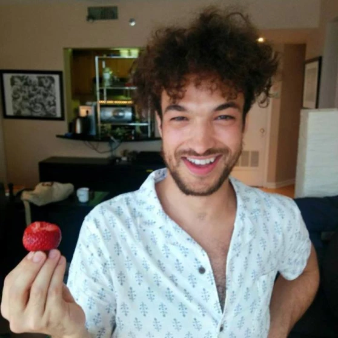

Yacin Nadji

contact info
(my first name at gatech dot edu)
bio
Howdy! I'm a computer security post doctoral researcher with the Astrolavos Lab. Previously,
I received my Ph.D. under the supervision of Wenke Lee and Manos Antonakakis
and I work in the areas of botnet takedowns, DNS security and
applied machine learning. My interests are broad and I've also done work in mobile device security, dynamic malware analysis,
web security, and information retrieval.
I received my undergrad from
IIT where I was a member of the IIT (now Georgetown) Information Retrieval Lab led by Ophir Frieder.
My stint in web security was alongside Dawn Song's WebBlaze research group.
- Yizheng Chen, Manos Antonakakis, Roberto Perdisci, Yacin Nadji, David Dagon, Wenke Lee. "DNS Noise: Measuring the Pervasiveness of Disposable Domains in Modern DNS Traffic." International Conference on Dependable Systems and Networks (DSN), 2014 [PDF]
- Jessica Pater, Yacin Nadji, Elizabeth D. Mynatt, Amy Bruckman. "Just Awful Enough—The Functional Dysfunction of the Something Awful Forums" Proceedings of the SIGCHI Conference on Human Factors in Computing Systems (CHI), 2014 [PDF]
- Yacin Nadji, Manos Antonakakis, Roberto Perdisci, David Dagon, Wenke Lee. "Beheading Hydras: Performing Effective Botnet Takedowns." Proceedings of the ACM Conference on Computer and Communications Security (CCS), 2013 (19.8% acceptance rate) [PDF|press]
- Yacin Nadji, Manos Antonakakis, Roberto Perdisci, Wenke Lee. "Connected Colors: Unveiling the Structure of Criminal Networks." Research in Attacks, Intrusions and Defenses (RAID), 2013. (23% acceptance rate) [PDF]
- Wei Zhuo, Yacin Nadji. "MalwareVis: Entity-based Visualization of Malware Network Traces." Symposium on Visualization for Cyber Security (VizSec) October 15, 2012, Seattle, WA. [PDF]
- Manos Antonakakis, Roberto Perdisci, Yacin Nadji, Nikolaos Vasiloglou, Saeed Abu-Nimeh, Wenke Lee, David Dagon. "From Throw-Away Traffic to Bots: Detecting the Rise of DGA-Based Malware." USENIX Security Symposium, Bellevue, WA, August 8–10, 2012. (19.4% acceptance rate) [PDF|press]
- Yacin Nadji, Manos Antonakakis, Roberto Perdisci, Wenke Lee. "Understanding the Prevalence and Use of Alternative Plans in Malware with Network Games." Proceedings of the Annual Computer Security Applications Conference (ACSAC), 2011. (18.5% acceptance rate) [PDF]
- Yacin Nadji, Jon Giffin, Patrick Traynor. "Automated Remote Repair for Mobile Malware." Proceedings of the Annual Computer Security Applications Conference (ACSAC), 2011. (18.5% acceptance rate) [PDF]
- Yacin Nadji, Prateek Saxena, Dawn Song. "Document Structure Integrity: A Robust Basis for Cross-site Scripting Defense." Network & Distributed System Security Symposium, 2009. (11% acceptance rate) [PDF]
personal